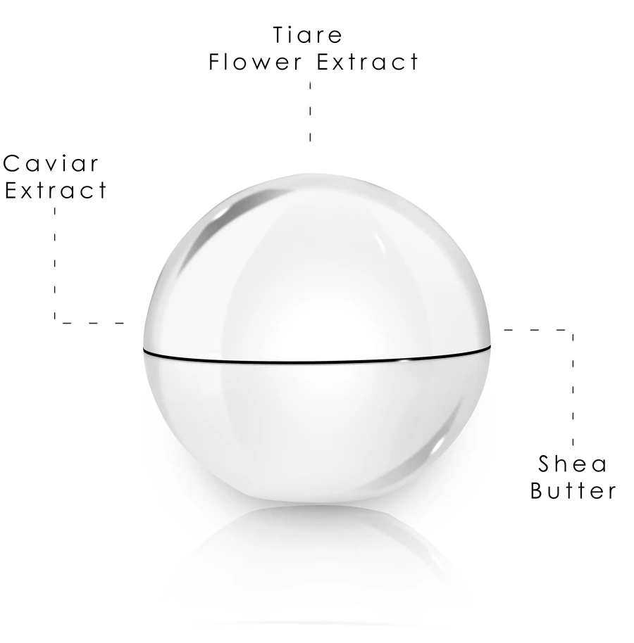
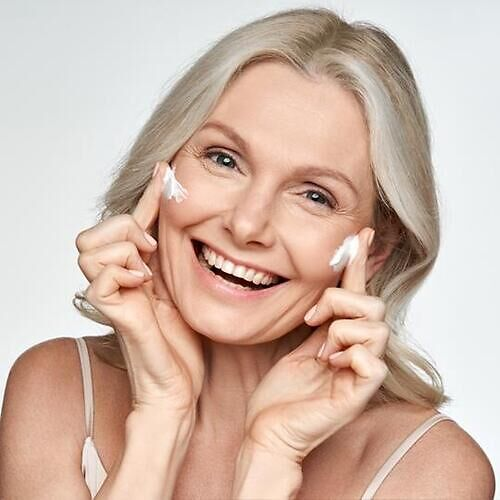
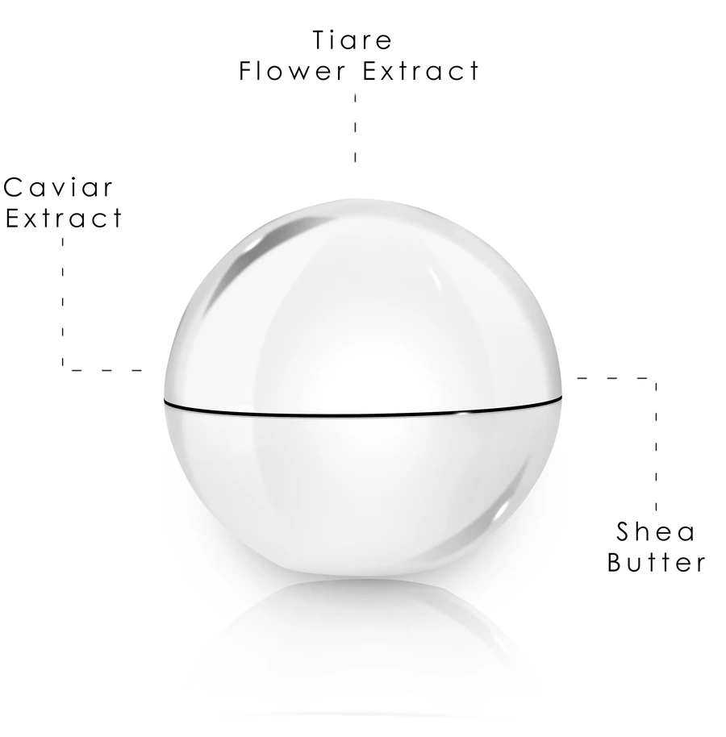
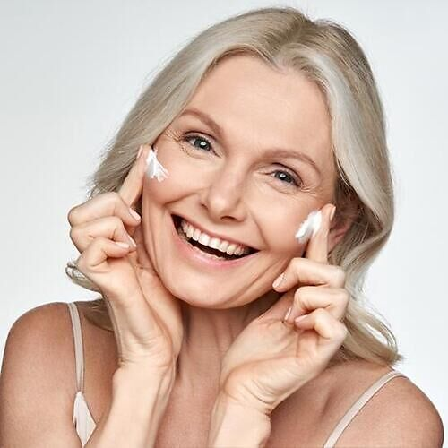
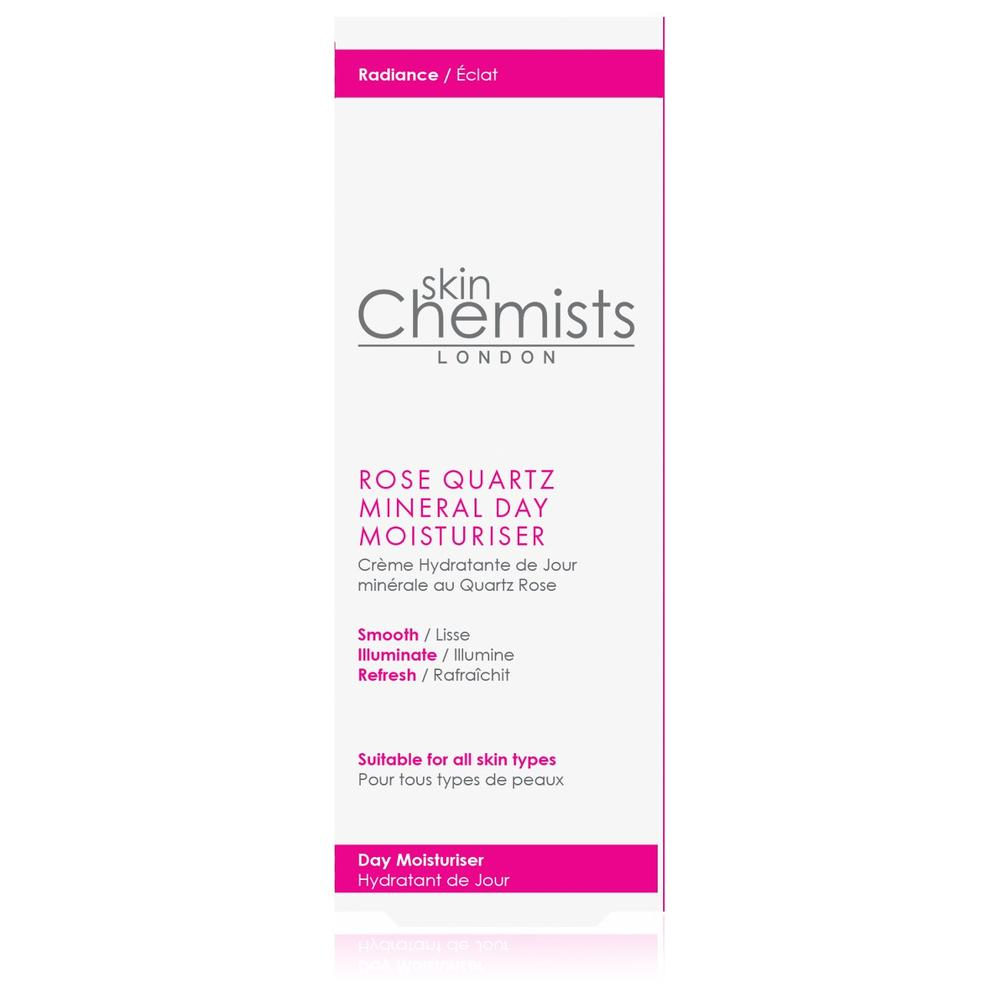
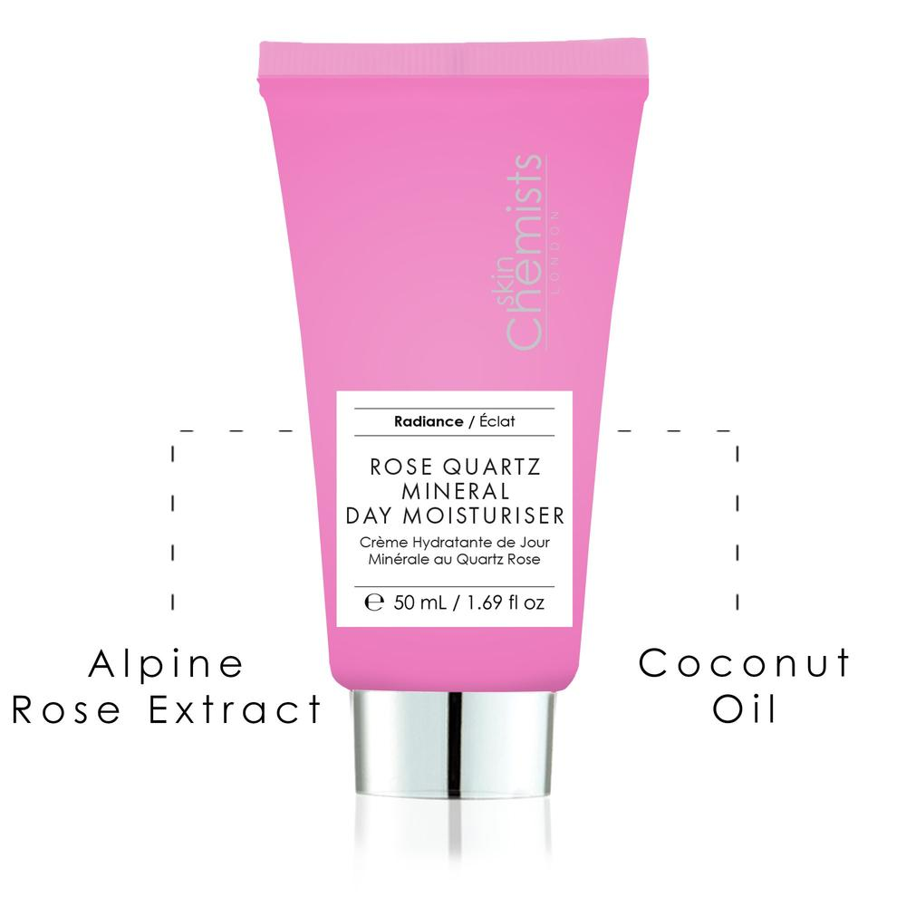
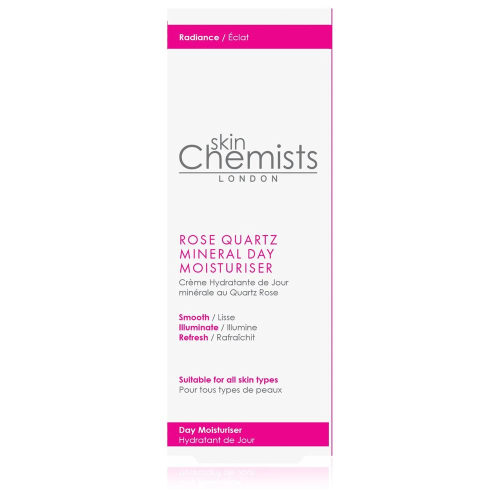
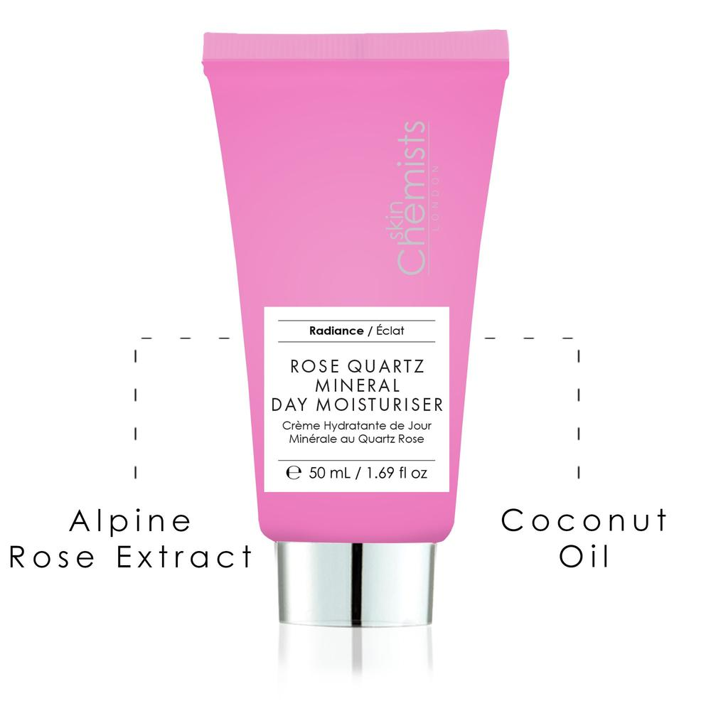

anti-âge
Notre Soin de Nuit Anti-Age au Caviar a pour objectif de matifier, lisser et illuminer votre peau. Infusé de caviar nutritif, nous visons à nourrir votre peau et à équilibrer le teint irrégulier pendant que vous dormez.
Acheter en ligne
Notre Soin de Nuit Anti-Age au Caviar a pour objectif de matifier, lisser et illuminer votre peau. Infusé de caviar nutritif, nous visons à nourrir votre peau et à équilibrer le teint irrégulier pendant que vous dormez.
Acheter en ligneNotre hydratant de jour minéral au quartz rose vise à rafraîchir, nourrir et illuminer votre peau. Avec un mélange nourrissant de rose des Alpes et d'huile de noix de coco qui illumine votre teint, nous visons à laisser votre peau plus radieuse et plus jeune.
Acheter en ligneNotre lotion éclaircissant avancé contient une formule pionnière d'éclaircissement de la peau qui vise à vous donner une peau plus lisse, plus lumineuse et plus uniforme. Le toner équilibre, hydrate et laisse la peau nourrie tout en équilibrant le pH et en minimisant les rougeurs
Acheter en ligneNotre hydratant de jour anti-rides vise à garder votre peau lisse, ferme et hydratée. contenant l'ingrédient primé 'Syn-Ake' qui vise à réduire l'apparence des ridules d'expression et des rides plus profondes
Acheter en ligneNotre hydratant de nuit au collagène Pro-5 au venin d'abeille vise à hydrater, nourrir et raffermir la peau. Contenant du venin d'abeille, de l'huile de noix de coco hydratante et du miel qui a des niveaux élevés d'antioxydants, cette crème est une hydratation nocturne exceptionnelle pour votre peau.
Acheter en ligneRayonnez de jeunesse en ajoutant notre sérum à l'acide hyaluronique à votre routine hebdomadaire ! L'acide hyaluronique est un ingrédient puissant mondialement reconnu qui aide à combattre la déshydratation, à retenir l'humidité, à dégonfler et à repulper. Il est hygroscopique, ce qui signifie qu'il absorbe l'humidité de son environnement et travaille simultanément avec le collagène et l'élastine dans le tissu cutané, maximisant la structure, la forme et la fermeté. Il est hygroscopique,
Acheter en ligneAcide tranexamique L'acide tranexamique aide à visiblement atténuer l'hyperpigmentation due à l'exposition au soleil et peut également : - Estomper l'apparence des marques post-acné quelque soit la couleur - Réduire visiblement les rougeurs - Estomper l'hyperpigmentation des taches brunes qui apparaissent pendant la grosses, appelés masque de grossesse - Cibler différents processus qui causent l'hyperpigmentation de la peau Niacinamide (Vitamine B3) Les propriétés apaisantes, antioxydantes et anti-inflammatoires de la niacinamide permettent d'agir en amont sur la prévention des marques hyperpigmentées. Les marques sur le visage peuvent être estompées grâce à son action. Le teint est plus uniforme et lumineux.
Acheter en ligne

Notre sérum pour les yeux au rétinol est spécialement formulé pour lutter contre les poches et les ridules autour de la zone délicate des yeux, ainsi que pour créer une barrière protectrice contre les agresseurs cutanés. Les actifs contenus dans cette formulation visent à laisser le contour des yeux rafraîchi et ferme avec une jeunesse élevée pour un teint éveillé.
Acheter en lignelivraison rapide dans toutes les régions du maroc
plus de 50ans à faire la différence
Vous pouvez nous envoyer un mail à tout moment, de jour comme de nuit.


Notre crème de jour anti-âge au caviar vise à matifier, lisser et éclaircir votre peau. Infusés de caviar nutritif, nous visons à nourrir votre peau et à équilibrer le teint irrégulier.
Résultats:
✔ Hydratant de jour léger.
✔ Équilibre le teint irrégulier.
✔ L'activité anti-oxydante protège des dommages des radicaux libres.
 



Notre Soin de Nuit Anti-Age au Caviar a pour objectif de matifier, lisser et illuminer votre peau. Infusé de caviar nutritif, nous visons à nourrir votre peau et à équilibrer le teint irrégulier pendant que vous dormez.
Rayonnez de jeunesse en ajoutant notre sérum à l'acide hyaluronique à votre routine hebdomadaire ! L'acide hyaluronique est un ingrédient puissant mondialement reconnu qui aide à combattre la déshydratation, à retenir l'humidité, à dégonfler et à repulper. Il est hygroscopique, ce qui signifie qu'il absorbe l'humidité de son environnement et travaille simultanément avec le collagène et l'élastine dans le tissu cutané, maximisant la structure, la forme et la fermeté. Il est hygroscopique,
 



Notre hydratant de jour minéral au quartz rose vise à rafraîchir, nourrir et illuminer votre peau. Avec un mélange nourrissant de rose des Alpes et d'huile de noix de coco qui illumine votre teint, nous visons à laisser votre peau plus radieuse et plus jeune.
j'ai testée la lotion éclaircissante, elle est vraiment top
ma peau a retrouvé une bonne hydratation grâce à la crème Caviar Nuit de Skin Chemists
The caviar creme is the best product I ever tried so far, I absolutely recommend it
Un coup de coeur pour la lotion Eclaircissante de Skin Chemists, je l'utilise depuis 20 jours, et j'ai senti une amélioration au niveau de mes pores dilatés
Une belle découverte, la crème Quatrz Rose Skin Chemists est géniale
j'aime la façon dont ma peau brille quand j'utilise du quartz rose par skinchemists